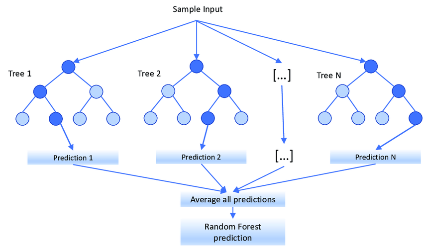
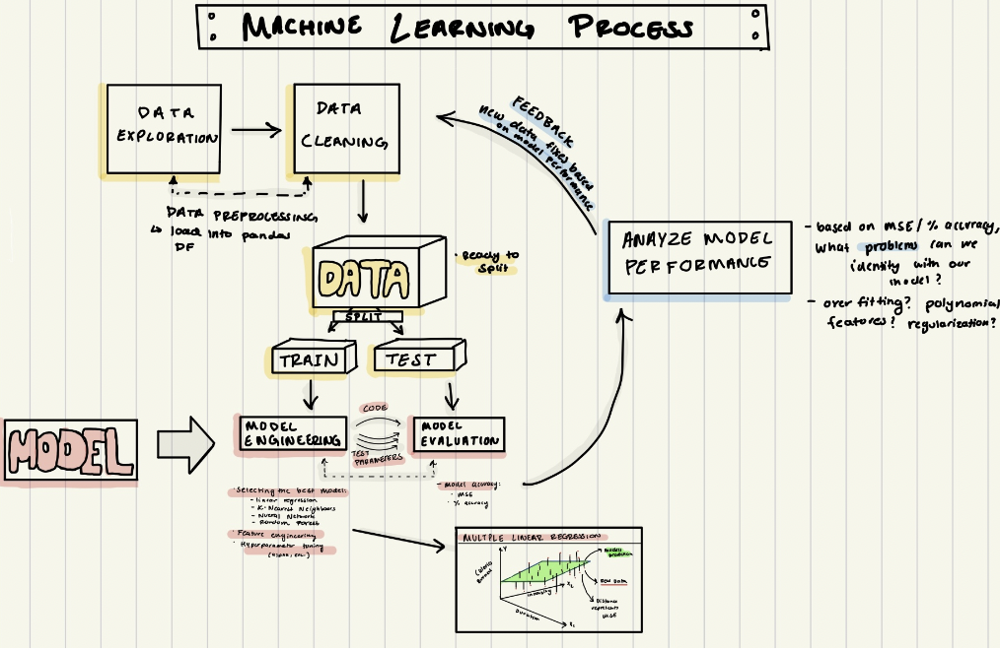
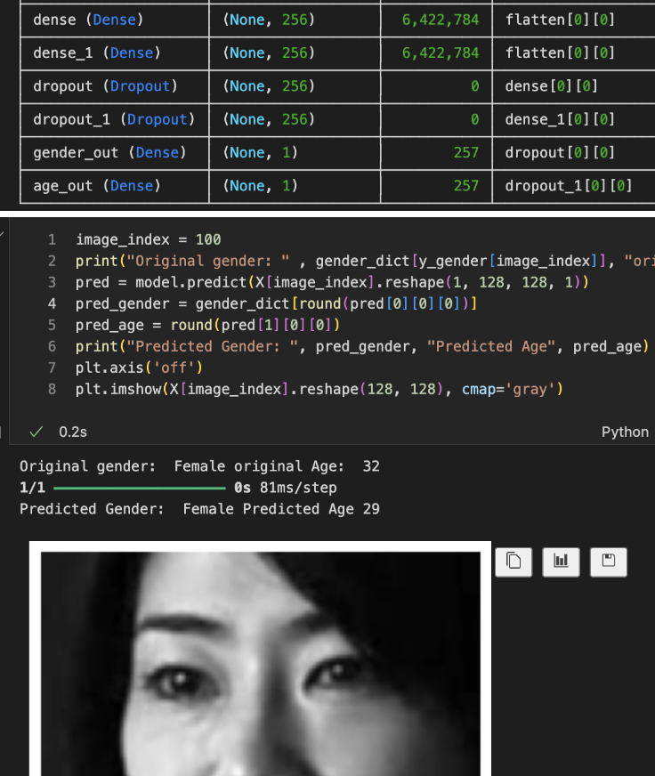
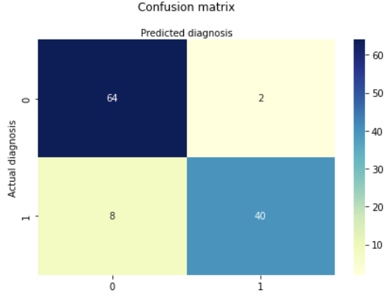
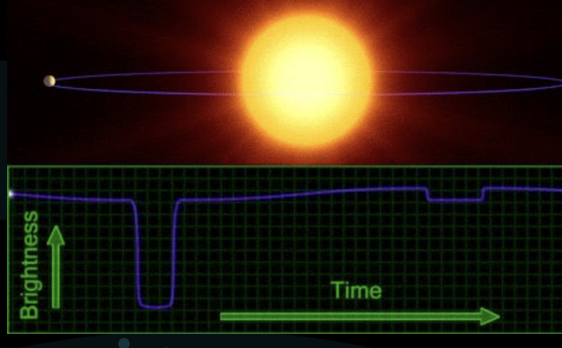
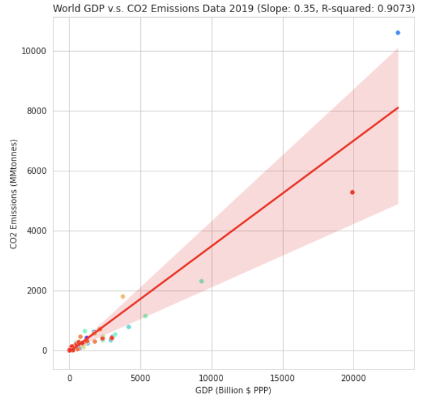
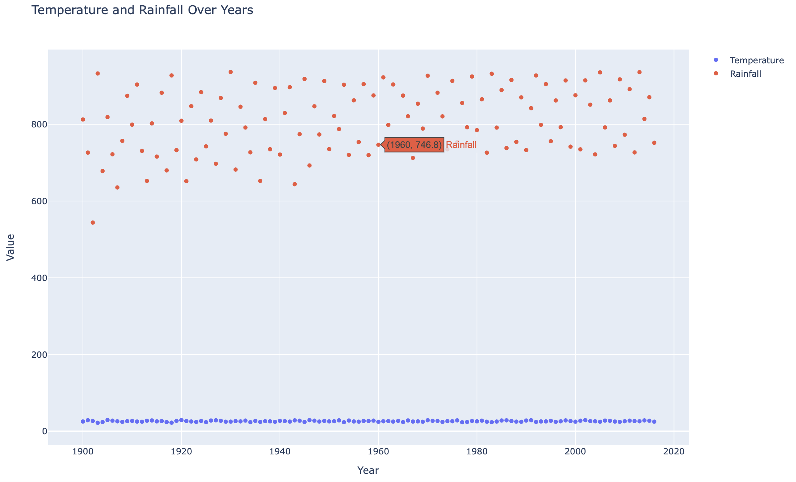

Projects
AP Score Predictor

AP Score Predictor is a mini-project that takes in binary input of student indicators such as work_habits, attendance, and collaboration along with factors such as letter grade to creat Random Forest Association and predict AP Score!
- Data
- Machine Learning
- Random Forest
Pocket Therapist
Your Pocket Therapist uses an AI Face algorithm to accurately understand the user's emotions and provide advice/quotes in response. Credit to : Tanisha Patil, Vivian Ni
- Data
- Machine Learning
- Spring
ML Fitness Project

Machine learning exploration on fitness data and calorie prediction using pandas DF. This has many applications into real world situations of nutritionists and medical proffesionals.
- Machine Learning
- Data
- Pandas
ML Age/Gender Detector

Exploration of CV and intersection with machine learning. This project predicts age and gender of the user based on 64 facial landmarks. Feel free to test the model!
- Machine Learning
- Data
- CV
Biopsy Classifier

A regression model that can determine whether a breast cancer sample is malignant or benign.
- Data
- Machine Learning
- Python
Transit Photometry

Co-authored presentation, led team in creating 99.87% accurary c-neural network to predict transit photometry for exoplanet discovery.
- CNN
- AI
- Graphical Analysis
GDP v. CO2

Analysis on correlation between GDP & CO2 emissions to advocate for policies that address the impact of economic growth on the earth.
- Data
- Python
- Regression
Choropleth

App utilizes Python with Plotly and GeoJSON data to generate interactive choropleth map visualizing county unemployment rates.
- Plotly
- JSON
- Python
Bar Chart

This Python script visualizes historical JSON population data for Brazil using Plotly, showcasing data visualization and Python programming skills.
- Plotly
- JSON
- Python
Scatter Plot

This project uses Python and Plotly to display interactive temperature/rainfall data, showcasing data visualization skills.
- Plotly
- JSON
- Python
Random Quote

Generates random quotes from an API, showcasing skills in HTML, CSS, JavaScript, and API integration.
- SASS
- API
- JavaScript